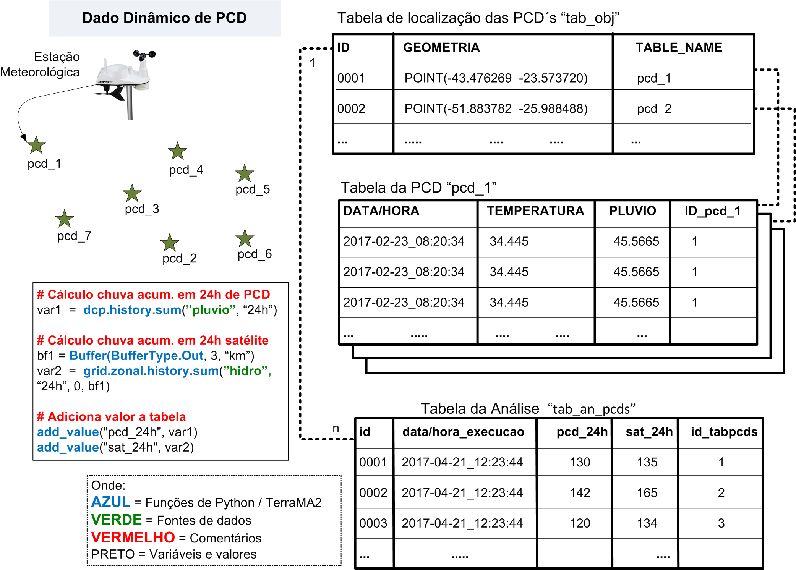

Exemplo de análise baseado em PCD
A seguir apresentamos um exemplo típico da utilização de análise baseada em PCD . Assim, no exemplo abaixo (Figura 3.33) considere o seguinte cenário:
- A série de dados dinâmicos do tipo PCD recebe as medidas de precipitação com frequência de 1 hora que serão utilizadas para calcular o valor acumulado no período de 24 horas.
- Os dados dinâmicos matriciais com valores de precipitação estimada por satélite serão adquiridos com frequência de 30 minutos, porém os valores destes estão em mm/h (dados “hidro”).
- O valor acumulado em 24 horas de precipitação por satélite será calculado para uma área de influência de 3 km em torno de cada PCD.
- Ambos valores de precipitação acumulada em 24 horas, medido pela PCD e calculado a partir das imagens de satélite, serão armazenados como resultado para posterior uso.

Figura 3.33 – Exemplo de análise com PCD.
Para uma melhor compreensão do programa de análise do exemplo, vamos analisar as partes do programa da figura.
# Cálculo chuva acum. em 24h de PCD
var1 = dcp.history.sum(“pluvio”, “24h”)
Essa linha define uma nova variável denominada de “var1” que será inicializada com o valor do operador “soma” aplicado a cada uma das PCD´s. Observe que “pluvio” é o nome do atributo que contém as informações de chuva horária e deve estar cadastrado em cada PCD.
# Cálculo chuva acum. em 24h satelite
bf1 = Buffer(BufferType.Out, 3, “km”)
var2 = grid.zonal.history.sum(“hidro”, “24h”, 0, bf1)
Essas duas linhas definem o tipo de buffer a ser aplicado a cada PCD. A variável “bf1” define um buffer de 3 km externo a geometria em questão, no caso em torno dos pontos de cada PCD. A variável “var2” utiliza a área do buffer de cada PCD para sobrepor a um conjunto de dados matriciais dinâmicos de nome “hidro” num período de 24 horas passadas a partir da hora atual.
# Adiciona valor a tabela
add_value(“pcd_24h”, var1)
add_value(“sat_24h”, var2)
Nas duas linhas acima são definidos os nomes dos atributos que serão utilizados para armazenar os resultados das variáveis “var1” e “var2”, isto é, nos atributos “pcd_24h” e “sat_24h” respectivamente. O nome da tabela que deverá receber os dois atributos é um dos parâmetros definidos para este tipo de análise.
Outro ponto importante a ser observado no exemplo, é a presença de comentários que não tem qualquer significado na execução do programa, apenas para fins de documentação. Use o sinal # para adicionar uma linha de comentário.
Ainda na Figura 3.33 mostra a tabelas envolvidas nesse tipo de análise. A tabela “tab_obj” mantém a localização de cada PCD da série de dados dinâmico definida. As tabelas “pcd_1”, “pcd_2” entre outras armazenam em cada uma os dados coletados de cada PCD. A tabela “tab_an_pcds” é criada pela análise e armazena os resultados de todas as PCD´s.
Para uma maior compreensão da sintaxe da linguagem ou uso de opções avançadas, recomenda-se a leitura do anexo, a documentação disponível em português em https://wiki.python.org.br ou site oficial em https://www.python.org/ . |